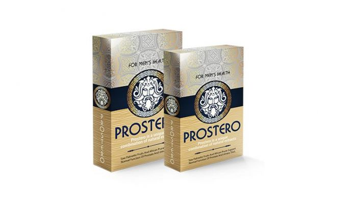

Prostatita: Generalitati, Factori de risc si Tratament
2020.10.01 22:57
Abonare newsletter Toate produsele Pentru frumusetea ta Dermatocosmetice si Cosmetice Igiena personala Pentru sanatatea ta - Preventie Aromaterapie Articulatii Diabet Imunitate Energie si Vitalitate Viata sexuala Prim Ajutor Homeopatie Suplimente dedicate barbatilor Suplimente alimentare pentru par piele si unghii Somn linistit si relaxare Antitabac Vitamine & Minerale De slabit Pentru sanatatea ta - Tratare Alergii Cardio Raceala si gripa Digestie Ingrijire ORL Durere Tratare piele Sistem urinar Alimentatie sanatoasa Bauturi Dieta Functionala Dieta Speciala Ceaiuri Mama si copilul Accesorii Alimentatie Ingrijire bebe Ingrijire mama Diverse Laborator Aparatura medicala Parafarmaceutice Promotii Promotii Exclusiv in Sensiblu Noutati in Sensiblu Despre noi Prezentare Sensiblu Fundatia Sensiblu Cariere Blog Sanatate Sfatul farmacistului Frumusete Ingrijire copii Sensiblu Sanatate Prostatita: Generalitati, Factori de risc si Tratament 13
Dec
Prostatita: Generalitati, Factori de risc si Tratament
Categorie SanatateProstatita - Generalitati
Prostatita reprezinta o boala inflamatorie a prostatei, organ de forma ovala, ce se afla sub vezica urinara a barbatului si inconjoara uretara. Prostata produce cea mai mare parte a lichidului seminal.
De cele mai multe ori cauzele prostatitei nu sunt cunoscute. Aproximativ 50% din barbatii cu prostatita nu au semne de inflamatie, deci o cauza exacta nu poate fi determinata. Dintre cei care au semne de inflamatie, aproximativ 10% au o infectie bacteriana. Un procent mic dintre aceste persoane cu inflamatia prostatei nu prezinta simptome.
Prostatita - Simptome
Simptomele sunt asemanatoare pentru toate formale de prostatita, cu exceptia prostatitei acute bacteriene si a prostatitei inflamatorii asimptomatice.
Simptomele formelor cronice de prostatita, inclusiv a sindromului dureros cronic pelvin inflamator si neinflamator, includ:
- polachiurie, urinari frecvente cu cantitati mici de urina
- disurie, senzatie de arsura la urinare
- nicturie, urinari frecvente in timpul noptii
- dificultati in pornirea jetului urinar, jet urinar intrerupt, presiune scazuta a jetului urinar si picaturi de urina dupa terminarea jetului
- senzatie de golire incompleta a vezicii urinare
- durere sau disconfort la nivelul spatelui, zonei testiculare sau anale, abdomenului inferior, deasupra pubisului sau coapse. Durerea se accentuaza in timpul digestiei intestinale
- durere sau disconfort in timpul sau dupa ejaculare
- durere la extremitatile penisului.
Prostatita - Mecanism fiziopatologic
Prostatita, in special cea care are perioade lungi simptomatice, poate cauza stress, anxietate sau depresie.
Barbatii cu prostatita acuta bacteriana au durere de intensitate crescuta si pot necesita spitalizare. Majoritatea se vindeca in urma terapiei cu antibiotice.
Intarzierea tratamentului creste riscul aparitiei de complicatii de tipul sepsisului sau abcesului prostatic.
Prostatita - Factori de risc
Factorii ce cresc riscul de dezvoltare a prostatitei sunt:
- infectiile recente ale tractului urinar
- cateterizarea urinara recenta sau efectuarea unei cistoscopii (investigatie imagistica a vezicii urinare, ce include inserarea unei camere de luat vederi pe uretra pana in vezica)
- sexul anal
- bolile cu transmitere sexuala
- persoanele cu prostatita cronica bacteriana au un risc mai mare de a dezvolta un alt puseu de prostatita acuta.
Prostatita - Consult de specialitate
Se indica consultul de urgenta in cazul in care apar: febra, frisoane, simptome urinare ca durere sau senzatie de arsura la urinare sau in cazul in care apare hematuria (urina cu sange) sau piuria (urina cu colectie purulenta). Aceste simptome inidca prostatita acuta.
Comsultul unui medic specialist este indicat in cazul in care:
- exista dureri de spate in regiunea lombara si sacrata (spatele inferior), scrot, penis, anus sau in cazul in care apare durere in timpul ejacularii
- infectii urinare frecvente
- secretii neobisnuite de la nivelul penisului sau leziuni la nivelul organelor genitale
- tulburari ale urinarii de genul urinari nocturne frecvente, jet urinar cu presiune scazuta, sau urinari frecvente nelegate de aportul excesiv de lichide.
Prostatita - Investigatii
Investigarea pacientului suspect de prostatita incepe cu examenul fizic general si cu istoricul medical al pacientului. Tipul prostatitei nu poate fi determinat numai din istoric si simptome. Sunt necesare analize de laborator.
Prostatita acuta bacteriana este forma cea mai comuna de prostatita si cea mai usor de diagnosticat. In cazul in care aceasta se suspecteaza se indica efectuarea de culturi urinare pentru a determina prezenta si tipul bacteriilor.
In cazul in care nu se suspicioneaza o infectie bacteriana se efectueaza culturi din secretiile prostatice, recoltate prin masarea prostatei. Masarea prostatei pentru a determina aparitia secretiilor nu este indicata in cazul suspectarii unei infectii bacteriene pentru ca acest procedeu poate fi periculos si dureros. Unii specialisti considera ca masarea prostatei cu infectie bacteriana creste riscul de a dezvolta septicemie (infectie in sange).
Alte investigatii pot fi necesare in cazul in care:
- simptomele nu se remit in urma tratamentului
- inflamatia persista
- se suspicioneaza cancer de vezica urinara sau de prostata
- se presupune ca ar fi o complicatie, de genul abcesului prostatic.
Prostatita - Tratament
Terapia prostatitei incepe cu administrarea de antibiotice timp de cateva saptamani. In cazul in care simptomele se amelioreaza, se continua antibioterapia pentru 2-3 luni. In cazul in care simptomele nu se amelioreaza in timpul terapiei cu antibioptice, se fac analize suplimentare.
Prostatita bacteriana acuta
Terapia prostatitei acute bacteriene vizeaza vindecarea infectiei si prevenirea complicatiilor. Prostatita acuta bacteriana este tratata cu antibiotice, medicamente pentru febra (antipiretice) si durere (antialgige), administrare de fluide si odihna.
In cazul in care urinarea nu este posibila sau in cazul in care este necesara terapia intravenoasa cu antibiotice, se indica internarea in spital.
Majoritatea pacientilor se vindeca sub tratament in 3-4 saptamani.
Pentru a preveni prostatita acuta se indica:
- mentinerea unei igiene optime
- administrarea de lichide pentru a mentine urinarea normala
- terapia precoce a infectiilor urinare
- evitarea sexului anal neprotejat.
Tratamentul ambulator al prostatitei (la domiciliu)
In cazul in care se suspecteaza o prostatita bacteriana acuta sau cronica, in special in cazul in care apare si febra, este indicat consultul medicului specialist. In acest caz se va recomanda un tratament eficace.
Exista totusi cateva masuri ce pot fi luate pentru a ameliora simptomele:
- administrarea de antialgice, de genul aspirinei, algocalmin, administrarea de antiinflamatorii nesteroidiene sau acetaminofen
- bai calde la nivelul regiunii pelvine
- odihna si administrara de lichide, in cazul unei infectii. Aceste masuri amelioreaza simptomele si grabesc vindecarea
- evitara constipatiei printr-o alimentatie ce sa cuprinda multe fibre: fructe si legume, paine integrala, cerale si multe lichide.
Tratamentul chirurgical al prostatitei
Terapia chirurgicala este indicata in cazul prostatitei bacteriene cronice care nu raspunde la tratament antibiotic si care produce episoade frecvente de infectii ale tractului urinar. Procedeele chirurgicale sunt efectuate pentru a indeparta partile infectate ale prostatei sau calculi prostatici. Acest procedeu in unele cazuri nu determina vindecare, poate produce chiar o inrautatire a simptomelor.
Procedeul chirurgical ce permite indepartarea unei parti din prostata sau a calculilor prostatici se numeste prostatectomie transuretrala.
Indepartarea calculilor prostatici poate sa nu duca la vindecare datorita faptului ca nu se indeparteaza si portiunea prostatica ce contine calculii.
Terapii alternative
Masajul prostatic
Masajul prostatic este o terapie care a fost des folosita in trecut si care incepe sa fie folosita din nou in unele centre, deoarece terapia medicamentoasa nu este intotdeauna incununata de succes.
Masajul prostatei se face cu un deget intr-o manusa lubrifiata introdus in rect cu care se apasa de cateva ori pe prostata. Acest procedeu se repeta de 2-3 ori pe saptamana. Care este cauza pentru care acest procedeu creste rata vindecarii nu se stie cu siguranta, dar se presupune ca masajul determina deblocarea canalelor prostatice si imbunatateste circulatia sanguina si penetrarea antibioticelor la nivelul prostatei.
Alte terapii pentru sindromul dureros inflamator sau neinflamator pelvin includ:
- biofeedback
- tehnici de relaxare
- acupunctura.
Promotii
Abonare la NEWSLETTER ×Harta site
Harta site Prezentare Sensiblu Fundatia Sensiblu Retea farmacii Exclusiv in Sensiblu CariereInformatii
Informatii Termeni si conditii de utilizare Politica de confidentialitate Politica privind cookie-urile Contact Sensiblu Romania Arhiva regulamente Arhiva campaniiContact
Telefon: 0800.080.234
Strada Ciobanului 133, Mogosoaia, Ilfov
Email: contact@adpharma.com
ContactFarmacii langa tine
- Prostatita - tratament naturist - SanatateCuPlante
- Prostatita: Generalitati, Factori de risc si Tratament
- PROSTATA - Perne pentru hemoroizi, afectiuni anale, dureri ...
- Prostata: cele mai comune boli ale acesteia si ...
- Prostatita acută - cauze, simptome, diagnostic şi ...
- Prostatia cronica - Actinmed
- Adevărul despre Prostero – preț, păreri, forum, prospect ...
- Prostatita | Prostenal
- Prostatita - medicover.ro
- PROSTATITELE - rasfoiesc.com
- Prostatita - tratament naturist - SanatateCuPlante
Prostatita acuta este o infectie a prostatei si poate reprezenta o problema grava de sanatate in randul barbatilor. Prostata este un organ vecin vezicii urnare, o glanda a aparatului urogenital masculin. Mai exact, este zona de intersectie intre calea genitala si cea urinara. Rolul prostatei este de a produce o parte din lichidul seminal si de a activa spermatozoizii prin alcalinizarea ...
- Prostatita: Generalitati, Factori de risc si Tratament
Prostatita subacuta..Intrebare :) » Secțiunea: Forum medical...la un control la medic si mi-a gasit o prostatita subacuta. Mi-a prescris asa :Augmentin 1/12 ore, Flamexin 2 plicuri /zi dupa mese si Tinizol 4 pastile azi si ...ore alte 4.
- PROSTATA - Perne pentru hemoroizi, afectiuni anale, dureri ...
Prostatita - Mecanism fiziopatologic. Prostatita, in special cea care are perioade lungi simptomatice, poate cauza stress, anxietate sau depresie. Barbatii cu prostatita acuta bacteriana au durere de intensitate crescuta si pot necesita spitalizare. Majoritatea se vindeca in urma terapiei cu antibiotice.
- Prostata: cele mai comune boli ale acesteia si ...
Prostatita consta in inflamarea prostatei, adica a glandei situata exact sub vezica urinara a barbatului. Glanda prostata are rolul de a produce lichidul care transporta spermatozoizii. Prostatita cauzeaza adesea disconfort si durere la urinare. Aceasta afectiune poate aparea la orice varsta, insa ...
- Prostatita acută - cauze, simptome, diagnostic şi ...
Prostatita (inflamație sau o infecție a prostatei) este o boală complexă, ce poate avea multe modalități de manifestare. Spre deosebire de majoritatea problemelor legate de prostată, prostatita apare mai frecvent la bărbații tineri și de vârsta a doua.
- Prostatia cronica - Actinmed
Prostatita acuta bacteriana este tratata cu antibiotice, medicamente pentru febra (antipiretice) si durere (antialgige), administrare de fluide si odihna. In cazul in care urinarea nu este posibila sau in cazul in care este necesara terapia intavenoasa cu antibiotice, se indica internarea in spital.
- Adevărul despre Prostero – preț, păreri, forum, prospect ...
Prostatita este o inflamatie a glandei prostatei. Exista multe forme de prostatita, dar vom insista pe doua dintre ele: acute si cronice.Prostatita acuta – este de fapt perioada de debut a afectiunii.Prostatita cronica apare in cazul in care oamenii tolereaza afectiunea fara a apela la medic si in termen de 3-6 luni prostatita intra in faza cronica.
- Prostatita | Prostenal
Prostatita inflamatorie asimptomatica (prostatita histologica) prostatita acuta. etiopatogenie: apare datorita infectarii prostatei cu diversi germeni: Escherichia Coli, Klebsiella, Proteus, Enterobacter, Piocianic, mai rar Stafilococul auriu si Enterococul, Chlamydia sau anaerobi ca diverse specii de Bacterioides.
- Prostatita - medicover.ro
Prostatita cronică bacteriană. Prostatita cronică bacteriană este cauzată tot de infecția bacteriană, dar diferă de prostatita acută bacteriană prin faptul că prostatita cronică bacteriană persistă mai mult de trei luni, iar intervalul de timp în care aceasta se instalează este mai mare. Prostatita cronică bacteriană afectează mai frecvent bărbații între 35 și 50 ani.
- PROSTATITELE - rasfoiesc.com
Prostatita acută bacteriană generează, în schimb, simptome foarte severe, ce au nevoie de îngrijire medicală imediată, pentru a evita apariția complicațiilor. Este important de reținut faptul că există și cazuri în care prostatita nu prezintă nici un fel de simptom. În aceste situații boala poate fi diagnosticată atunci când ...
Prostatita acuta este o infectie a prostatei si poate reprezenta o problema grava de sanatate in randul barbatilor. Prostata este un organ vecin vezicii urnare, o glanda a aparatului urogenital masculin. Mai exact, este zona de intersectie intre calea genitala si cea urinara. Rolul prostatei este de a produce o parte din lichidul seminal si de a activa spermatozoizii prin alcalinizarea ...
Prostatita subacuta..Intrebare :) » Secțiunea: Forum medical...la un control la medic si mi-a gasit o prostatita subacuta. Mi-a prescris asa :Augmentin 1/12 ore, Flamexin 2 plicuri /zi dupa mese si Tinizol 4 pastile azi si ...ore alte 4.
Prostatita - Mecanism fiziopatologic. Prostatita, in special cea care are perioade lungi simptomatice, poate cauza stress, anxietate sau depresie. Barbatii cu prostatita acuta bacteriana au durere de intensitate crescuta si pot necesita spitalizare. Majoritatea se vindeca in urma terapiei cu antibiotice.
Prostatita consta in inflamarea prostatei, adica a glandei situata exact sub vezica urinara a barbatului. Glanda prostata are rolul de a produce lichidul care transporta spermatozoizii. Prostatita cauzeaza adesea disconfort si durere la urinare. Aceasta afectiune poate aparea la orice varsta, insa ...
Prostatita (inflamație sau o infecție a prostatei) este o boală complexă, ce poate avea multe modalități de manifestare. Spre deosebire de majoritatea problemelor legate de prostată, prostatita apare mai frecvent la bărbații tineri și de vârsta a doua.
Prostatita acuta bacteriana este tratata cu antibiotice, medicamente pentru febra (antipiretice) si durere (antialgige), administrare de fluide si odihna. In cazul in care urinarea nu este posibila sau in cazul in care este necesara terapia intavenoasa cu antibiotice, se indica internarea in spital.
Prostatita este o inflamatie a glandei prostatei. Exista multe forme de prostatita, dar vom insista pe doua dintre ele: acute si cronice.Prostatita acuta – este de fapt perioada de debut a afectiunii.Prostatita cronica apare in cazul in care oamenii tolereaza afectiunea fara a apela la medic si in termen de 3-6 luni prostatita intra in faza cronica.
Prostatita inflamatorie asimptomatica (prostatita histologica) prostatita acuta. etiopatogenie: apare datorita infectarii prostatei cu diversi germeni: Escherichia Coli, Klebsiella, Proteus, Enterobacter, Piocianic, mai rar Stafilococul auriu si Enterococul, Chlamydia sau anaerobi ca diverse specii de Bacterioides.
Prostatita cronică bacteriană. Prostatita cronică bacteriană este cauzată tot de infecția bacteriană, dar diferă de prostatita acută bacteriană prin faptul că prostatita cronică bacteriană persistă mai mult de trei luni, iar intervalul de timp în care aceasta se instalează este mai mare. Prostatita cronică bacteriană afectează mai frecvent bărbații între 35 și 50 ani.
Prostatita acută bacteriană generează, în schimb, simptome foarte severe, ce au nevoie de îngrijire medicală imediată, pentru a evita apariția complicațiilor. Este important de reținut faptul că există și cazuri în care prostatita nu prezintă nici un fel de simptom. În aceste situații boala poate fi diagnosticată atunci când ...
